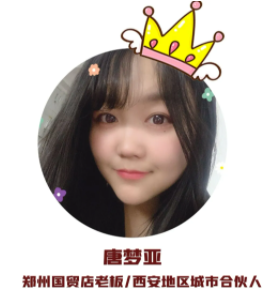
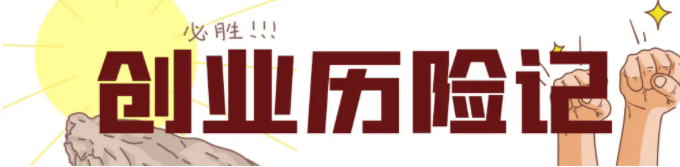
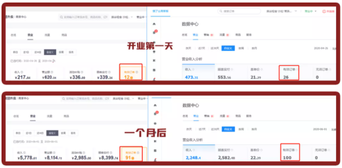
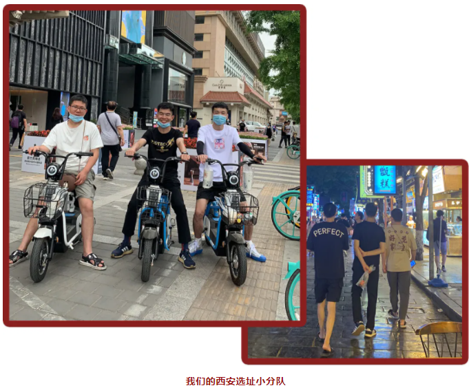
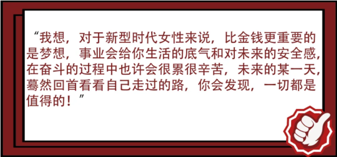

- 1
- 2

 合作条件
合作条件
 加盟流程
加盟流程
 服务支持
服务支持
 品牌优势
品牌优势
-
从国贸店老板到西安合伙人，这个女孩不简单
-
2020的疫情打击了不少行业
但 时势造英雄
总有些人从中脱颖而出

目前，她自营 2家店 ，并成为 西安地区合伙人
关于她的

从前的梦亚，是一个普通平凡的会计小姐姐。
去年 的梦亚，开了一家温馨可爱的猫舍，开始创业之旅。
今年 的梦亚，开了一家郑州国贸店开业，成为优秀的轻食店老板。
而现在 的梦亚，已当上令人羡慕的 西安地区城市合伙人！
还在做会计时，梦亚便决心创业，于是利用业余时间开了一家猫具用品店，但是店内事无巨细的操心让她感觉开猫舍也不是她最想要的。
“一直想要做生意，我的目标也很明确，当时只是看到了猫舍旁边的亚丽（郑州升龙国际店老板）生意做得很不错，我立刻就去开了我的国贸店！”梦亚坚定地说。
跟升龙国际店老板了解到加盟合作细节后，梦亚爽快签下合同并辞去会计工作，然而天灾的到来，让她不得不将开业时间一推再推，直到4月郑州 外卖市场开始迎来新的爆发。

“放弃？没想过，不可抗因素谁也没法预料，当时总部那边新店不断，单量屡创新高，也让自己更有信心。”

就在梦亚想开二店以谋求更大的发展时，郑州市的无谷门店早已开满，于是梦亚将目光投向西安——一个全新的城市。
除了去过西安旅游，弟弟在西安上学外，这个城市对梦亚来说，就是一个陌生之地，当问到为什么进军西安时，她的理由非常简单：
“做了轻食之后，不需要像以前那样操心太多，开店就像一个傻瓜式操作流程，每个人都能舒服当老板，西安是一线城市，我相信轻食有很大的市场。”
于是梦亚开始她的合伙人之路
梦亚的创业激情和稳定的营收
让身边的朋友们投来星星眼
于是......
一周内，6家门店同时选址
噔噔噔噔！

小谷问梦亚为什么这么拼，她十分坦率地回答道：

最后 致敬那些
正在为事业打拼的女孩
愿你们
终将成为不平凡的自己